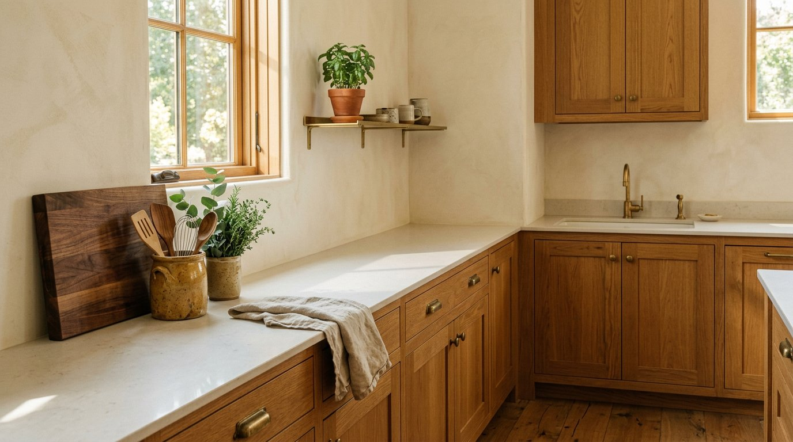
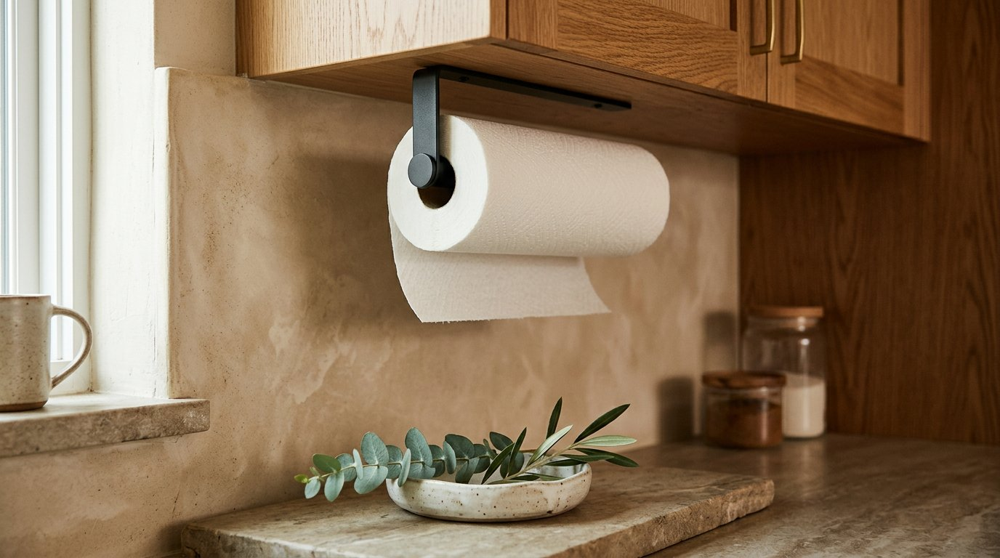

Walls
Wallpaper smoothing kit
Start with the wall, not the tool kit.
Read the guide →Find the right tools for a smoother wall, a clearer counter, and a cabinet that finally works for you.
Explore the upgrades →
Start with the wall, not the tool kit.
Read the guide →
Find a spot that works with a full roll.
Read the guide →
Measure with the pans and lids you already use.
Read the guide →Compare usable capacity, cleanup and the space you’ll need before choosing a format.
Read the air fryer guide →